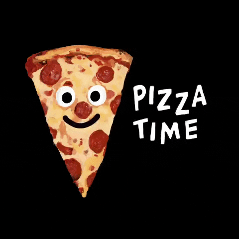

This is the life of Tea Shkurti... An Albanian girl who describes how it is to be an Albanian and to grow up there!

Hello and welcome to our beautiful country! My name is Tea Shkurti and I was born and raised in Albania. I was born in Kavaja city on 19th May 2001. The city where I was born and spend my childhood is a small city.
As a child I always had a lot of friends and we used to spend so much time together outside playing games in the neighboorhood. I was really energetic and stubborn as my mom says.As a kid I didn't like school too much because for me it was boring and I just wanted to spend time outside playing with my friends. Even right now with all the technology era etc., in Albania kids still go and play outside. Also there are a lot of activities that children can attend, like: football, volleyball, tennis and other different sports courses. Also children can contribute in different associations, for example to help people in need, to protect the environment etc. In Albania a child can enter school when he is 6 year old.
At the age of 10 I entered a volleyball course just for fun and when I was 14 years old I got accepted in one volleyball city team. The new team that i got accepted was in the city where my mother was from, Durres. So I and my family had to move there. The volleyball championship in Albania starts from November until December and we have to play agains other cities. In this case we travel a lot from one city to another. After some months I had to stop playing volleyball beacause I got injured and after that I started to concentrate only on my studies. In high-school the competitition between students is really strong so we need to study really hard. But on the other side a teenager in Albania is very lucky. Albanians are really friendly so we do not have any problem with making new frinds. Everywhere that you go it's 100% sure that you will make new friends. Also Albanian teenagers like to travel and to party a lot. As for me, I have a lot of friends, even the ones that I meet in kindergarden. But my best friends are the ones that I meet in high school. We always used to go outside and have fun together. We always support each other. After school we used to go on the coast beacause in my city it is just 20 minutes away by foot from our school. I am happy to have such wonderful people around me. After finishing high school, just like the most of Albanian students, I wanted to continue my studies abroad. In this way I get to learn how to live by myself far away from my family and my home. Why do we choose to study abroad? Well first of all as I said we get to learn how to live by ourselves and second is that by going on other countries we get to learn new culture, meet with new people and find new ideas so when we come back home we apply them and make our country better. I applied and won the schoolarship in Turkey so I decided to continue there. Right now I am studying Computer Engineering at Sakarya University. Even though I am far away from my country I still miss it and I always think about it.
As for my future I believe that after finishing my Bachelor I want to start working for my dream which is to create a big company that will help my country and then the whole world to become a better place.
As you can see I am a sport person so I love sports and one of my favourite sport right now is Formla 1. Back when I was home I always watched the races with my dad. Last year when I come in Turkey I got the opportunity to go ans watch the Tukish Grand Prix live.
I also like a lot to listen to music like: Alternative, Indie, Pop, K-pop, Rock, Clasic music.
I like food a lot but I hate to prepare it. My favourite food is Pizza and "Krepa". In my city there is a particular place which prepares "Krepa" and I suggest you to go and try them too. They are FANTASTIC!
I am a really determined person when it comes to the things that I want. I always set a goal and work hard and smart to achieve it. Sometimes I can be stubborn but I like it beacuse it keeps me going further. I am a funny person who likes jockes and sarcasmas too. I am kind and I care a lot about other people and I try to do as much as I can to help them. One thing that I like about myself is that I do not really listen to what other people think or say about me. And one thing that I hate is that sometimes I can be really lazy.
So this is me, Tea, and I invide you to read and learn more about my family, school...
HURRY UP!!! Put some pizza for me in the box... I am starving...
